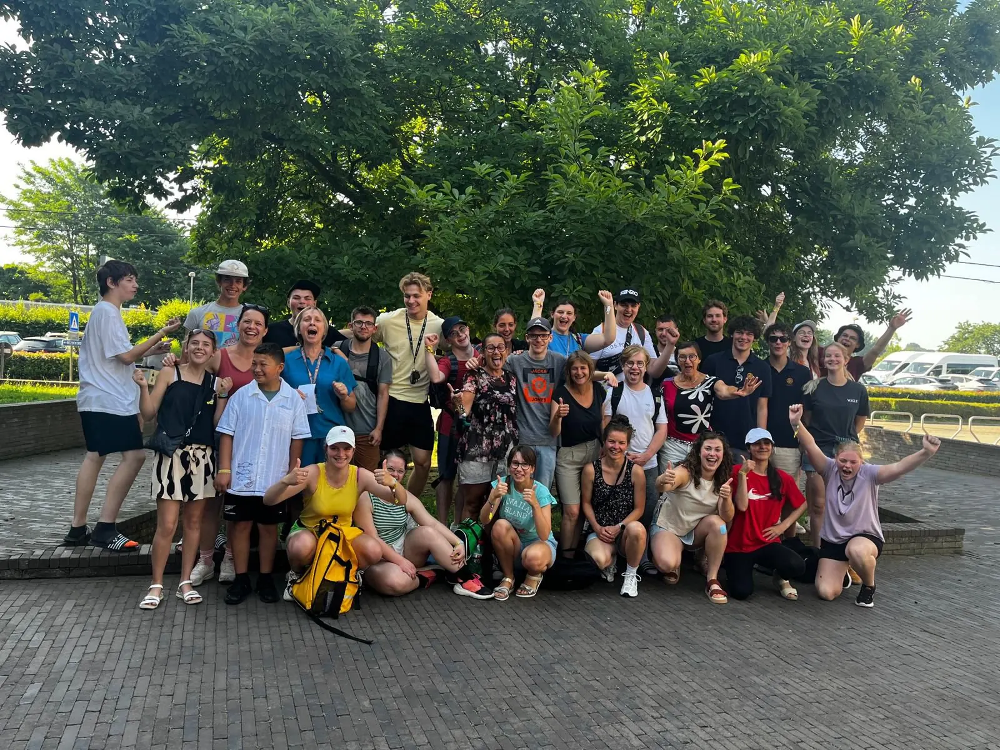

Transparantie
Fondsenwerving met een duidelijk doel.
Onze events brengen mensen samen en zamelen middelen in voor projecten en organisaties die passen bij onze missie: jonge mensen, lokale inzet en maatschappelijke impact.
Onze missie
Rotaract Gaasbeek Pajottenland is een jonge serviceclub voor Gaasbeek en het Pajottenland. We organiseren clubavonden, serviceprojecten en publieke events waarmee we vriendschap, persoonlijke groei en maatschappelijke inzet combineren.
De opbrengst van onze acties wordt gebruikt om lokale en sociale doelen te steunen, om concrete projecten mogelijk te maken en om mensen samen te brengen rond initiatieven met maatschappelijke waarde.
Hoe we fondsen werven
We zamelen middelen in via publieke events, ticketverkoop, sponsoring, samenwerkingen en acties zoals rally's, filmavonden, stands of clubprojecten. Elke actie vermeldt zo duidelijk mogelijk welk doel ze ondersteunt.
Wanneer op een pagina tickets, inschrijvingen of steunmogelijkheden staan, gaat het om fondsenwerving voor onze VZW en de goede doelen of projecten die op die pagina vermeld worden.
Hoe opbrengsten worden gebruikt
Met netto-opbrengst bedoelen we de inkomsten van een actie na aftrek van rechtstreekse kosten zoals locatie, materiaal, verzekering, betaalverwerking, communicatie en praktische organisatie. Die netto-opbrengst gaat naar het aangekondigde doel of naar serviceprojecten die door de club worden goedgekeurd.
Voorbeelden van doelen zijn VZW De Poel, een internaatsfonds in samenwerking met Sint-Jozefscollege Aalst, lokale serviceprojecten en initiatieven voor mensen in kwetsbare omstandigheden.
Commerciële activiteit
Ticketverkoop, drankverkoop, sponsoring of merchandising zijn ondersteunend aan onze missie. De website is geen webshop als hoofdactiviteit. Eventinkomsten dienen om projecten, goede doelen en de werking rond die acties mogelijk te maken.
Vragen over opbrengsten
Wie vragen heeft over een specifieke actie, opbrengstbestemming of samenwerking kan ons contacteren via rotaractgaasbeek@gmail.com. We lichten graag toe welk doel aan een event gekoppeld is en hoe steun wordt ingezet.
Laatste update
Deze transparantiepagina werd laatst bijgewerkt op 16 september 2026.